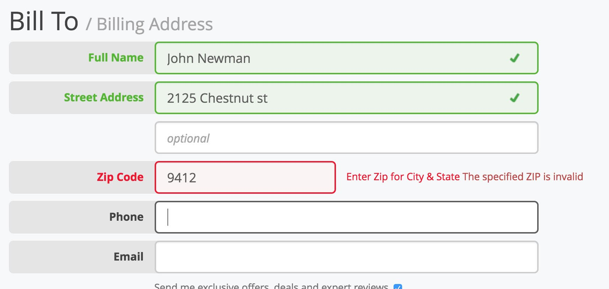

Hinweis: Für diese Aufgabe gibt es mehrere Lösungsansätze!
Aufgabe: Überlege dir, welche Möglichkeiten es gäbe, ungültige gültige (und auch gültige Felder) mit CSS grafisch zu markieren bzw. hervorzuheben, nachdem das Validieren mit Ajax erfolgt ist. Dies hilft enorm, die Benutzerfreundlichkeit zu steigern.
Übernimm irgendein Beispiel aus diesem Tutorial und passe es dahingehend an.
Ein Beispiel:
